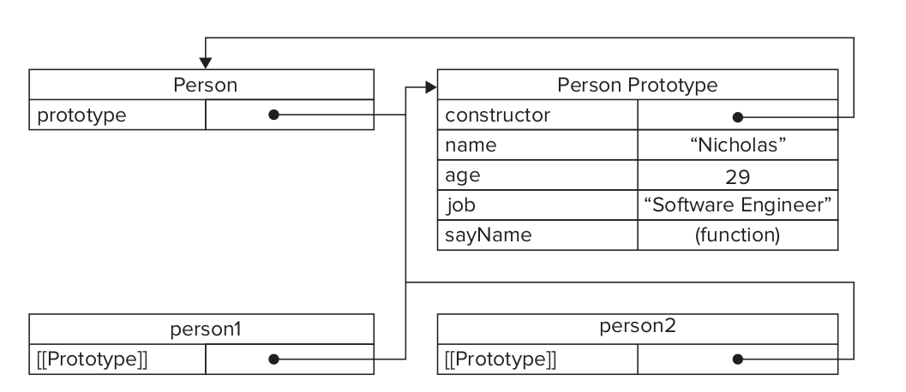
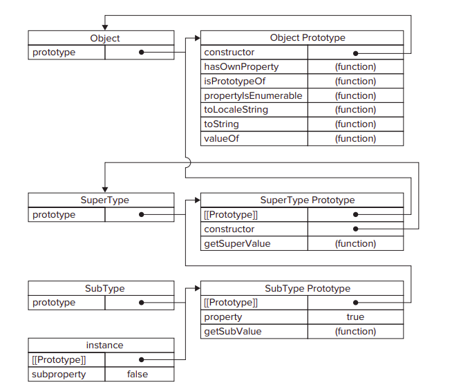

Object-oriented (OO) languages typically are identifi ed through their use of classes to create multiple objects that have the same properties and methods.
ECMAScript has no concept of classes, and therefore objects are different than in class-based languages.
ECMA-262 defi nes an object as an “unordered collection of properties each of which contains a primitive value, object, or function.”
Each property or method is identifi ed by a name that is mapped to a value. For this reason , it helps to think of ECMAScript objects as hash tables: nothing more than a grouping of name-value pairs where the value may be data or a function.
Simplest way to create a custom object is to create a new instance of Object and add properties and methods to i
const person = new Object();
person.name = "Maximus";
person.age = 29;
person.job = "Gladiathor";
person.sayName = function(){
console.log(this.name);
};
person.sayName(); // Gladiathor
object literals became the preferred pattern for creating such objects
const person = {
name: "Maximus",
age: 29,
job: "Gladiathor",
sayName: function() {
console.log(this.name);
}
};
Data properties contain a single location for a data value. Values are read from and written to this location. Data properties have four attributes describing their behavior:
When a property is explicitly added to an object [[Configurable]],[[Enumerable]] , and [[Writable]] are all set to true while the [[Value]] attribute is set to the assigned value
the property called name is created and a value of 'Maximus' is assigned. That means [[Value]] is set to 'Maximus' , and any changes to that value are stored in this location.
const person = {
name: "Maximus"
};
To change any of the default property attributes, you must use the ECMAScript 5 Object.defineProperty() method. The properties on the descriptor object match the attribute names: configurable , enumerable , writable , and value.
const person = {};
Object.defineProperty(person, “name”, {
writable: false,
value: "Maximus"
});
alert(person.name); // "Maximus"
person.name = “Greg”;
alert(person.name); // "Maximus"
Similar rules apply to creating a nonconfi gurable property. Setting configurable to false means that the property cannot be removed from the object. Calling delete on the property has no effect. Once a property has been defi ned as nonconfi gurable, it cannot become confi gurable again.
const person = {};
Object.defineProperty(person, “name”, {
configurable: false,
value: "Maximus"
});
alert(person.name); // "Maximus"
delete person.name;
alert(person.name); // "Maximus"
Accessor properties do not contain a data value. Instead, they contain a combination of a getter function and a setter function
const book = { _year: 2004,edition: 1 };
Object.defineProperty(book, “year”, {
get: function(){
return this._year;
},
set: function(newValue){
if (newValue > 2004) {
this._year = newValue;
this.edition += newValue - 2004;
}
}
});
book.year = 2005;
alert(book.edition); //2
Since there’s a high likelihood that you’ll need to defi ne more than one property on an object, ECMAScript 5 provides the Object.defineProperties() method.
const book = {};
Object.defineProperties(book, {
_year: { value: 2004 },
edition: { value: 1 },
year: {
get: function(){ return this._year; },
set: function(newValue){
if (newValue > 2004)
this._year = newValue; this.edition += newValue - 2004;
}
}
});
It’s also possible to retrieve the property descriptor for a given property by using the ECMAScript 5 Object.getOwnPropertyDescriptor() method.
let descriptor = Object.getOwnPropertyDescriptor(book, “_year”);
alert(descriptor.value);//2004
alert(descriptor.confi gurable);//false
alert(typeof descriptor.get);//”undefined”
let descriptor = Object.getOwnPropertyDescriptor(book, “year”);
alert(descriptor.value);//undefi ned
alert(descriptor.enumerable);//false
alert(typeof descriptor.get);//”function
Using the Object constructor or an object literal are convenient ways to create single objects, there is an obvious downside: creating multiple objects with the same interface requires a lot of code duplication. To solve this problem, developers began using a variation of the factory pattern
The factory pattern is a well-known design pattern used in software engineering to abstract away the process of creating specifi c objects.
With no way to defi ne classes in ECMAScript, developers created functions to encapsulate the creation of objects with specifi c interfaces
function createPerson(name, age, job){
const person = new Object();
person.name = name;
person.age = age;
person.job = job;
person.sayName = function(){
alert(this.name);
};
return person;
}
const person1 = createPerson('Maximus', 29, “Gladiathor”);
const person2 = createPerson('Greg', 27, “Doctor”);
There are native constructors, such as Object and Array , which are available automatically in the execution environment at runtime. It is also possible to defi ne custom constructors that define properties and methods for your own type of object
function Person(name, age, job){
this.name = name;
this.age = age;
this.job = job;
this.sayName = function(){
alert(this.name);
};
}
const person1 = new Person('Maximus', 29, ““Gladiathor””);
const person2 = new Person('Greg', 27, “Doctor”);
Person() function takes the place of the factory createPerson() function. Note that the code inside Person() is the same as the code inside createPerson() , with the following exceptions:
the name of the function is Person with an uppercase P. By convention, constructor functions always begin with an uppercase letter, whereas nonconstructor functions begin with a lowercase letter.
To create a new instance of Person , use the new operator. Calling a constructor in this manner essentially causes the following four steps to be taken
At the end of the preceding example, person1 and person2 are each fi lled with a different instance of Person . Each of these objects has a constructor property that points back to Person
alert(person1.constructor == Person); //true
alert(person2.constructor == Person); //true
The constructor property was originally intended for use in identifying the object type. However, the instanceof operator is considered to be a safer way of determining type. Each of the objects in this example is considered to be both an instance of Object and an instance of Person , as indicated by using the instanceof operator
alert(person1 instanceof Object); //true
alert(person1 instanceof Person); //true
alert(person2 instanceof Object); //true
alert(person2 instanceof Person); //true
The only difference between constructor functions and other functions is the way in which they are called. Constructors are, after all, just functions; there’s no special syntax to define a constructor that automatically makes it behave as such. Any function that is called with the new operator acts as a constructor, whereas any function called without it acts just as you would expect a normal function call to act.
//use as a constructor
const person = new Person("Maximus", 29, “Gladiathor”);
person.sayName(); // 'Maximus'
//call as a function
Person(“Greg”, 27, “Doctor”);
window.sayName(); //”Greg”
Though the constructor paradigm is useful, it is not without its faults. The major downside to constructors is that methods are created once for each instance
person1 and person2 have a method called sayName() , but those methods are not the same instance of Function . Remember, functions are objects in ECMAScript, so every time a function is defined, it’s actually an object being instantiated
function Person(name, age, job){
this.name = name;
this.age = age;
this.job = job;
this.sayName = new Function('alert(this.name)'); // //logical equivalent
}
const person = new Person('Maximus', 29, 'Gladiathor');
person.sayName();
person1 and person2 have a method called sayName() , but those methods are not the same instance of Function . Remember, functions are objects in ECMAScript, so every time a function is defined, it’s actually an object being instantiated
function Person(name, age, job){
this.name = name;
this.age = age;
this.job = job;
this.sayName = new Function('alert(this.name)'); // //logical equivalent
}
const person1 = new Person('Maximus', 29, 'Gladiathor');
const person2 = new Person('Greg', 27, 'Doctor');
alert(person1.sayName == person2.sayName); //false
Each function is created with a prototype property, which is an object containing properties and methods that should be available to instances of a particular reference type. This object is literally a prototype for the object to be created once the constructor is called. The benefi t of using the prototype is that all of its properties and methods are shared among object instances. Instead of assigning object information in the constructor, they can be assigned directly to the prototype
function Person(){
}
Person.prototype.name = 'Maximus';
Person.prototype.age = 29;
Person.prototype.job = 'Gladiathor';
Person.prototype.sayName = function(){
alert(this.name);
};
const person1 = new Person();
person1.sayName(); // Maximus
const person2 = new Person();
person2.sayName(); // Maximus
alert(person1.sayName == person2.sayName); //true
Whenever a function is created, its prototype property is also created according to a specifi c set of rules. By default, all prototypes automatically get a property called constructor that points back to the function on which it is a property. In the previous example, for instance, Person.prototype.constructor points to Person . Then, depending on the constructor, other properties and methods may be added to the prototype
Person.prototype points to the prototype object but Person.prototype.constructor points back to Person . The prototype contains the constructor property and the other properties that were added. Each instance of Person , person1 , and person2 has internal properties that point back to Person.prototype only; each has no direct relationship with the constructor.
Even though [[Prototype]] is not accessible in all implementations, the isPrototypeOf() method can be used to determine if this relationship exists between objects. Essentially, isPrototypeOf() returns true if [[Prototype]] points to the prototype on which the method is being called
alert(Person.prototype.isPrototypeOf(person1)); //true
alert(Person.prototype.isPrototypeOf(person2)); //true
function Person(){}
Person.prototype.name = 'Maximus';
Person.prototype.age = 29;
Person.prototype.job = “Software Engineer”;
Person.prototype.sayName = function(){
alert(this.name);
};
const person1 = new Person();
var person2 = new Person();
person1.name = “Greg”;
alert(person1.name); // ”Greg” - from instance
alert(person2.name); // Maximus - from prototype
There are two ways to use the in operator: on its own or as a for-in loop. When used on its own, the in operator returns true when a property of the given name is accessible by the object, which is to say that the property may exist on the instance or on the prototype
function Person(){}
Person.prototype.name = 'Maximus';
Person.prototype.age = 29;
Person.prototype.job = “Software Engineer”;
Person.prototype.sayName = function(){
alert(this.name);
};
const person1 = new Person();
alert(person1.hasOwnProperty(“name”)); //false
alert(“name” in person1); //true
Person.prototype had to be typed out for each property and method. To limit this redundancy and to better visually encapsulate functionality on the prototype, it has become more common to simply overwrite the prototype with an object literal that contains all of the properties and methods
function Person(){
}
Person.prototype = {
name : 'Maximus',
age : 29,
job : “Software Engineer”,
sayName : function () {
alert(this.name);
}
};
Person.prototype property is set equal to a new object created with an object literal. The end result is the same, with one exception: the constructor property no longer points to Person . When a function is created, its prototype object is created and the constructor is automatically assigned. Essentially, this syntax overwrites the default prototype object completely, meaning that the constructor property is equal to that of a completely new object (the Object constructor) instead of the function itself.
const friend = new Person();
alert(friend instanceof Object); //true
alert(friend instanceof Person); //true
alert(friend.constructor == Person); //false
alert(friend.constructor == Object); //true
instanceof still returns true for both Object and Person , but the constructor property is now equal to Object instead of Person . If the constructor ’s value is important, you can set it specifi cally back to the appropriate value
function Person(){}
Person.prototype = {
constructor: Person, // important
name : 'Maximus',
age : 29,
job : “Software Engineer”,
sayName : function () {
alert(this.name);
}
};
Since the process of looking up values on a prototype is a search, changes made to the prototype at any point are immediately refl ected on instances, even the instances that existed before the change was made
function Person(){}
const friend= new Person();
Person.prototype.sayHi = function(){
alert('hi');
};
friend.sayHi(); //”hi” - works!
[[Prototype]] pointer is assigned when the constructor is called, so changing the prototype to a different object severs the tie between the constructor and the original prototype. Remember: the instance has a pointer to only the prototype, not to the constructor.
function Person() {}
const friend = new Person();
Person.prototype = {
constructor: Person,
name : 'Maximus',
sayName : function () {
alert(this.name);
}
};
friend.sayName();//error
Each of these (including Object , Array , String , and so on) has its methods defi ned on the constructor’s prototype. For instance, the sort() method can be found on Array.prototype , and substring() can be found on String.prototype
Native object prototypes can be modifi ed just like custom object prototypes, so methods can be added at any time.
alert(typeof Array.prototype.sort); //”function”
alert(typeof String.prototype.substring); //”function”
String.prototype.startsWith = function (text) {
return this.indexOf(text) == 0;
};
const msg = “Hello world!”;
alert(msg.startsWith(“Hello”)); //true
All properties on the prototype are shared among instances, which is ideal for functions. Properties that contain primitive values also tend to work well.where it’s possible to hide the prototype property by assigning a property of the same name to the instance. The real problem occurs when a property contains a reference value
Person.prototype = {
constructor: Person,
friends : [“Shelby”, “Court”],
sayName : function () { alert(this.name); }
};
const person1 = new Person(); const person2 = new Person();
person1.friends.push(“Van”);
alert(person1.friends); //”Shelby,Court,Van”
alert(person2.friends); //”Shelby,Court,Van”
The most common way of defi ning custom types is to combine the constructor and prototype patterns. The constructor pattern defi nes instance properties, whereas the prototype pattern defines methods and shared properties
function Person(name, age, job){
this.name = name; this.age = age; this.job = job;
this.friends = [“Shelby”, “Court”];
}
Person.prototype = {
constructor: Person,
sayName : function () {
alert(this.name);
}
};
const person1 = new Person('Maximus', 29, “Software Engineer”); person2 = new Person(“Greg”, 27, “Doctor”);
person1.friends.push(“Van”); //”Shelby,Court,Van”
alert(person2.friends); //”Shelby,Court”
alert(person1.friends === person2.friends); //false
alert(person1.sayName === person2.sayName); //true
The parasitic constructor pattern is typically a fallback when the other patterns fail. The basic idea of this pattern is to create a constructor that simply wraps the creation and return of another object
function Person(name, age, job){
const o = new Object();
o.name = name;
o.age = age;
o.job = job;
o.sayName = function(){
alert(this.name);
};
return o;
}
const friend = new Person('Maximus', 29, “Software Engineer”);
friend.sayName(); // Maximus
The concept most often discussed in relation to OO programming is inheritance.
Many OO languages support two types of inheritance
ECMA-262 describes prototype chaining as the primary method of inheritance in ECMAScript. The basic idea is to use the concept of prototypes to inherit properties and methods between two reference types. Recall the relationship between constructors, prototypes, and instances: each constructor has a prototype object that points back to the constructor, and instances have an internal pointer to the prototype.
That would mean the prototype itself would have a pointer to a different prototype that, in turn, would have a pointer to another constructor. If that prototype were also an instance of another type, then the pattern would continue, forming a chain between instances and prototypes.
function SuperType(){ this.property = true; }
SuperType.prototype.getSuperValue = function(){
return this.property;
};
function SubType(){
this.subproperty = false;
}
SubType.prototype = new SuperType(); //inherit from SuperType
SubType.prototype.getSubValue = function (){
return this.subproperty;
};
const instance = new SubType();
alert(instance.getSuperValue()); //true
All reference types inherit from Object by default, which is accomplished through prototype chaining. The default prototype for any function is an instance of Object, meaning that its internal prototype pointer points to Object.prototype. This is how custom types inherit all of the default methods such as toString() and valueOf()

function SuperType(){ this.property = true; }
SuperType.prototype.getSuperValue = function(){
return this.property;
};
function SubType(){ this.subproperty = false; }
SubType.prototype = new SuperType(); //inherit from SuperType
SubType.prototype.getSubValue = function () { //new method
return this.subproperty;
};
SubType.prototype.getSuperValue = function (){ //override existing method
return false;
};
const instance = new SubType();
alert(instance.getSuperValue()); //false
In an attempt to solve the inheritance problem with reference values on prototypes, developers began using a technique called constructor stealing
Functions are simply objects that execute code in a particular context, the apply() and call() methods can be used to execute a constructor on the newly created object
function SuperType(name){ this.name = name; }
function SubType(){
SuperType.call(this, 'Maximus'); //inherit from SuperType
this.age = 29; //instance property
}
const instance = new SubType();
alert(instance.name); // Maximus;
alert(instance.age); // 29
The object() function creates a temporary constructor, assigns a given object as the constructor’s prototype, and returns a new instance of the temporary type. Essentially, object() performs a shadow copy of any object that is passed into it
const person = { name: 'Maximus', friends: [“Shelby”, “Court”, “Van”] };
function object(o){
function F(){}
F.prototype = o;
return new F();
}
const anotherPerson = object(person);
anotherPerson.name = “Greg”;
anotherPerson.friends.push(“Rob”);
ECMAScript 5 formalized the concept of prototypal inheritance by adding the Object.create() method.
const person = {
name: 'Maximus',
friends: [“Shelby”, “Court”, “Van”]
};
const anotherPerson = Object.create(person);
anotherPerson.name = “Greg”;
anotherPerson.friends.push(“Rob”);